Where you ask the question — or say "I do," or throw the party of the year — shapes every frame we capture. This guide brings together the hidden proposal spots photographers love, the wedding venues we recommend to every couple, and the event spaces that photograph beautifully. Read through, pick the one that feels like you, and reach out — we'll handle every detail from there.
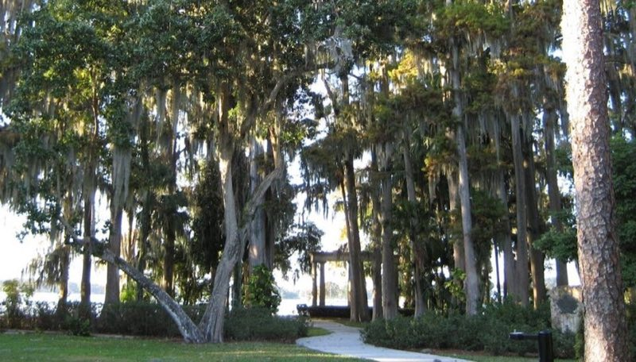
The undisputed king of Orlando proposal locations. Tucked along Lake Maitland, this hidden garden features "The Exedra" — a curved lakefront colonnade that frames couples perfectly against the water and Spanish moss. The golden-hour light here is genuinely breathtaking.
It's a public park, so we shoot early morning or golden hour to keep the columns clear and the light soft. Weekday mornings are nearly empty — perfect for privacy.
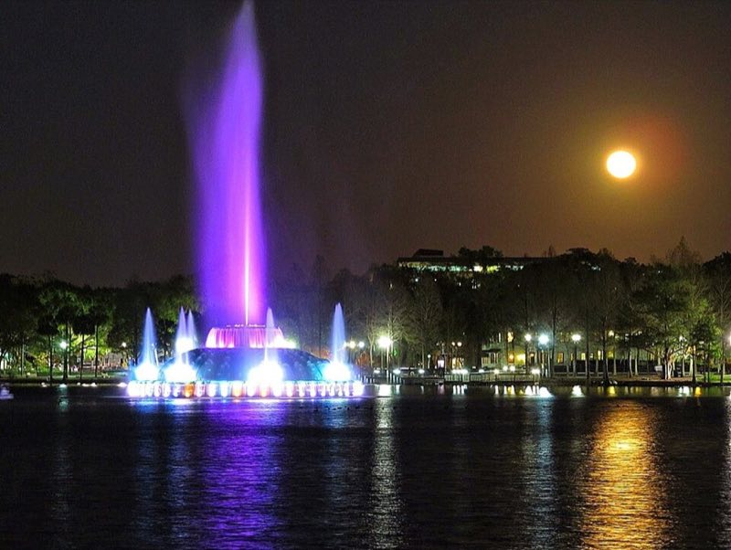
Everyone proposes at the swan boats. The secret is the eastern amphitheatre side, just past the fountain — a quieter waterfront stretch with perfect sightlines, Spanish moss, and the downtown skyline behind you. The lit fountain at blue hour is spectacular for post-proposal portraits.
The fountain cycles through colors all evening — we coordinate your timing so the "yes" lands on the best one.
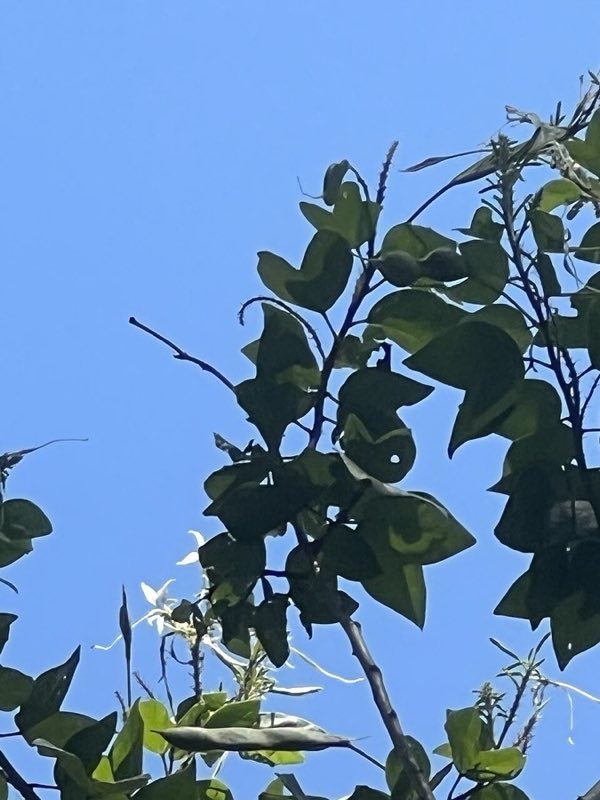
50 acres of botanical gardens just north of downtown — rose gardens, a floral clock, and lush tropical paths across 40+ plant collections. The Rose Garden in bloom is stunning, and the lakeside boardwalk feels a world away from the city. Garden ceremonies host up to 200 guests.
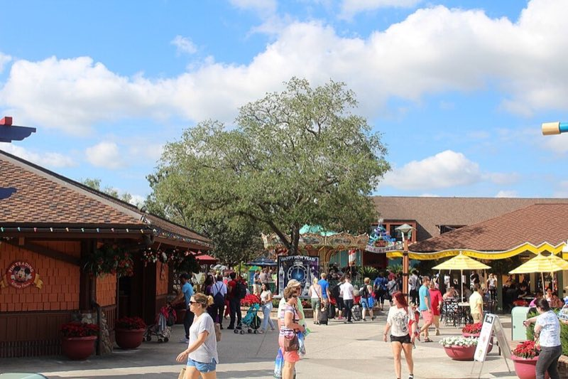
Free to access — no park ticket required. The Town Center waterfront has beautiful evening lighting, cobblestone walkways, and unmistakable Disney atmosphere without a full park day. Perfect for couples who love Disney but want the moment to feel intimate.
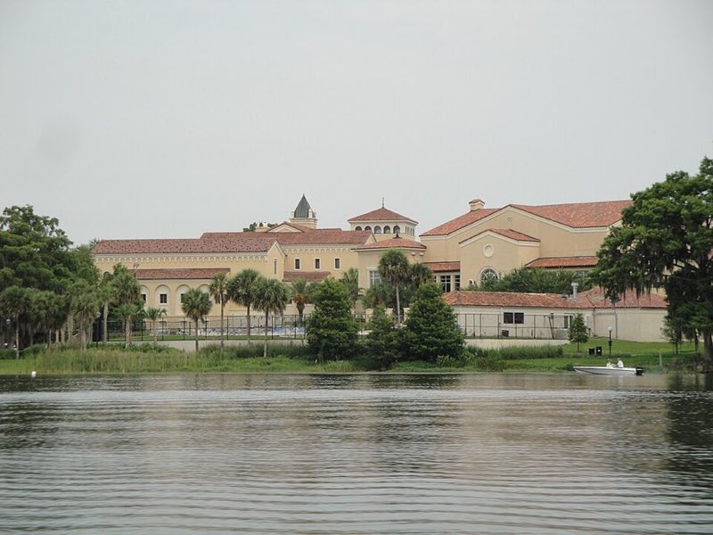
One of the most beautiful campuses in Florida, set directly on Lake Virginia. Spanish-Mediterranean architecture creates stunning backdrops, and the lakefront dock — facing west — turns pure gold at sunset.
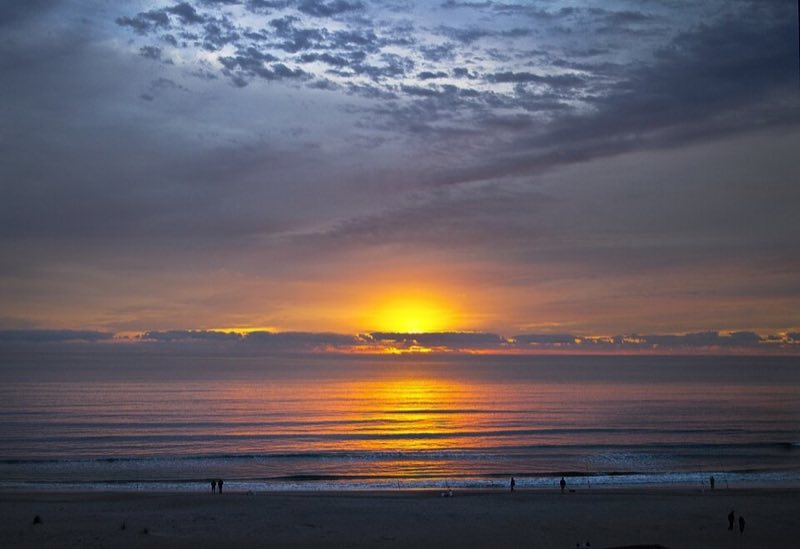
An hour east of Orlando and criminally underrated. The beach is nearly empty at dawn, the light is extraordinary, and the Atlantic backdrop is dramatic and timeless. Tidal pools at low tide create beautiful reflections.
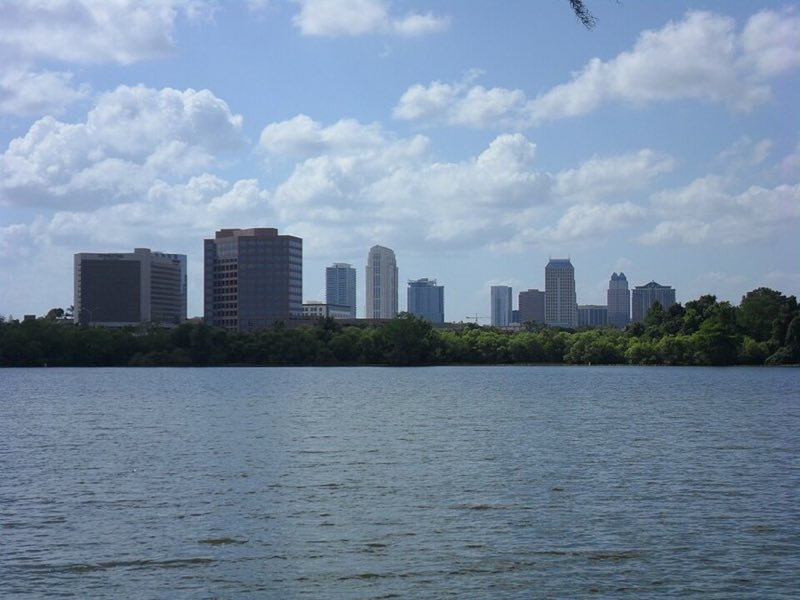
For the couple who wants something truly elevated — literally. Orlando's rooftop bars and hotel terraces offer panoramic skyline views that feel sophisticated, private, and unexpected. Ideal for the partner who loves city lights and a story nobody else has.
Tell us your favorite rooftop — or let us recommend one. We scout the sightlines in advance so the skyline lands right behind the ring.
An authentic Tuscan-inspired villa on 1,900 acres of rolling hills and shimmering lakes. Stone columns, brick archways, tiered fountains and golden-hour vistas make it the ultimate "destination feel" without leaving Florida — a showstopper for both surprise proposals and full weddings.
The Atrium columns and Reflection Pool at sunset are unreal on camera. Pair a proposal here with a drone add-on for sweeping aerials of the grounds.
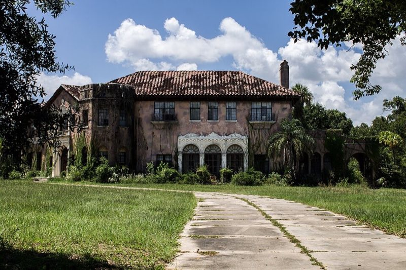
A restored 1920s Mediterranean Revival mansion with manicured gardens, winding staircases, a grand ballroom and multiple fireplaces. Old-world romance with dramatic architectural detail in every corner.
A private estate pairing Southern charm with European-inspired interiors, sweeping grand lawns and lush greenery. Intimate yet opulent — ideal for couples wanting a refined, exclusive backdrop.
An 80-acre lakeside estate on Lake Jessamine — a white colonial home, manicured lawns and Spanish moss draping the crape myrtles. Effortlessly elegant for engagements and lakeside weddings.
A tropical hideaway on Lake Bryan with sandy beaches, swaying palms and waterfront sunsets. The closest thing to a beach proposal near the Orlando attractions corridor.
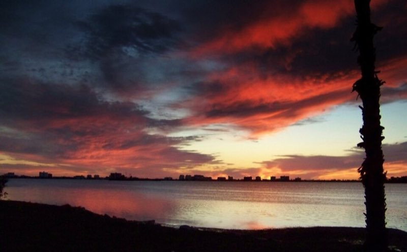
Sugar-white sand and some of the most celebrated sunsets on the Gulf Coast. A dream setting for surprise beach proposals that flow straight into a romantic couples session as the sky turns gold.
Sunset slots book fast in peak months. We scout the hidden proposal pocket away from crowds, then add drone coverage for the "yes" from above.
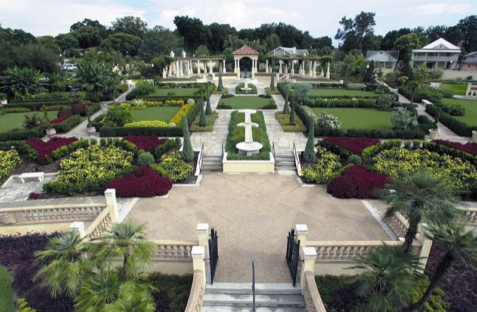
A formal botanical garden with classical fountains, marble columns and lakeside views over Lake Mirror — intimate, symmetrical and tailor-made for refined proposals and elegant micro weddings.
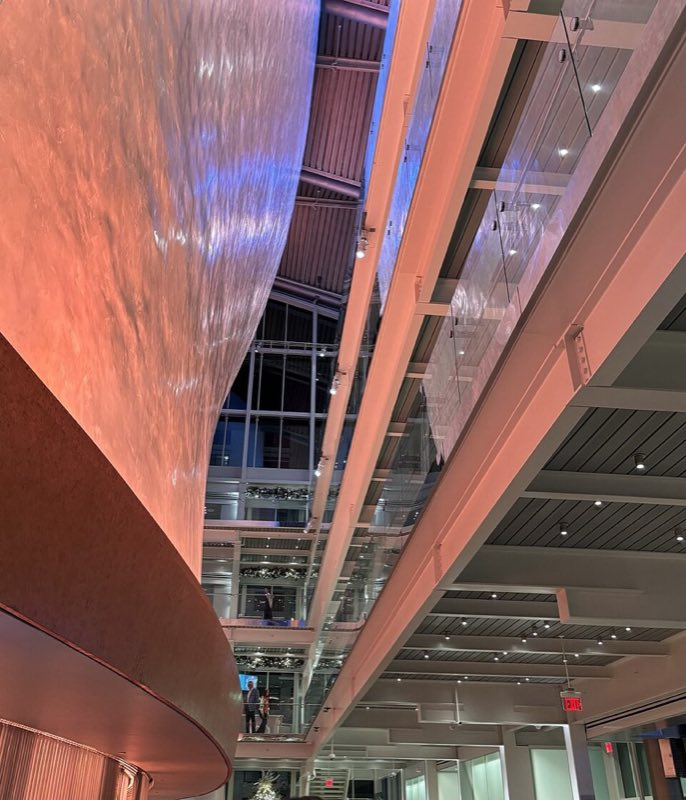
Orlando's premier arts venue — soaring glass lobbies, sculptural staircases and a rooftop terrace overlooking downtown. Corporate events and galas here photograph like magazine spreads.
The grand staircase and the Seneff Arts Plaza at blue hour are the money shots. We arrive early to capture the space empty, then document the event as it fills.
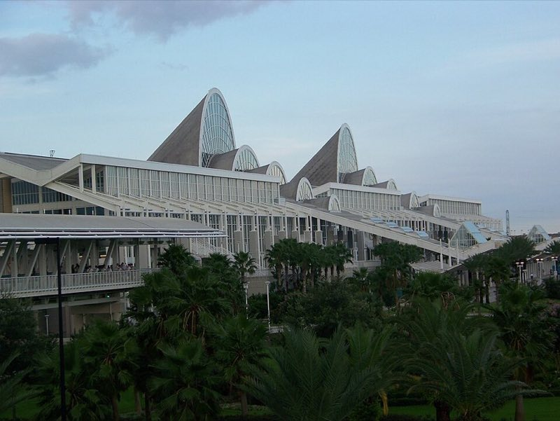
The second-largest convention center in America. Keynotes, booths, headshot stations, award dinners — we cover the full conference lifecycle with fast turnaround for your marketing team.
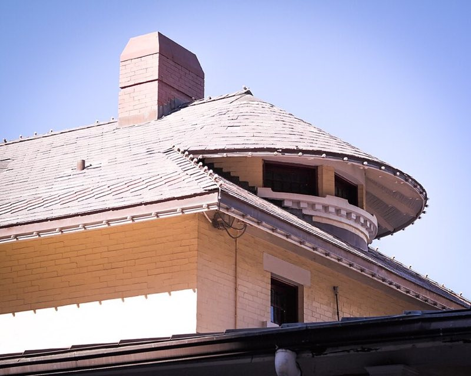
Orlando's historic railroad district — brick streets, vintage architecture and atmospheric venues like The Ballroom at Church Street. Rich, warm textures that give evening events a timeless feel.
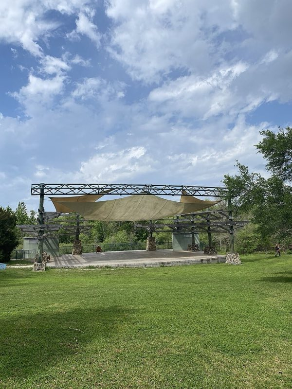
A lush, affordable outdoor venue under the oaks — ideal for milestone birthdays, graduation celebrations, baby showers and garden parties. Natural shade and dappled light all afternoon.
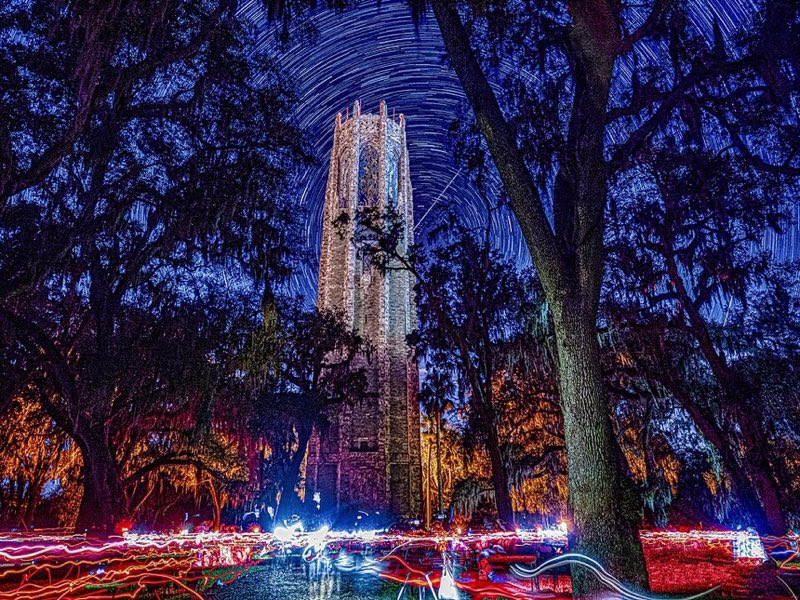
A national historic landmark — the 205-foot singing tower rises above 50 acres of Olmsted-designed gardens. Anniversaries, vow renewals and milestone family portraits feel monumental here.
Travel fee estimates include photographer travel time, 1–2 nights accommodation and ground transportation. All fees are agreed before booking — no surprises.
Found the one? Tell us your venue and your vision and we'll craft the perfect proposal, wedding or event experience — complete with optional drone coverage and a private online gallery.
Start Planning →